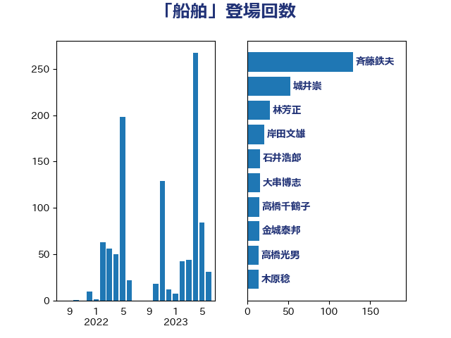

単語「船舶」

| 斉藤鉄夫 | 公明党 | 129 回 |
| 城井崇 | 立憲民主党 | 53 回 |
| 林芳正 | 自由民主党 | 28 回 |
| 岸田文雄 | 自由民主党 | 21 回 |
| 石井浩郎 | 自由民主党 | 16 回 |
| 大串博志 | 立憲民主党 | 16 回 |
| 高橋千鶴子 | 日本共産党 | 15 回 |
| 金城泰邦 | 公明党 | 15 回 |
| 高橋光男 | 公明党 | 14 回 |
| 木原稔 | 自由民主党 | 14 回 |
| 谷公一 | 自由民主党 | 11 回 |
| 蓮舫 | 立憲民主党 | 11 回 |
| 鈴木俊一 | 自由民主党 | 10 回 |
| 浜田靖一 | 自由民主党 | 10 回 |
| 山本佐知子 | 自由民主党 | 10 回 |
| 鬼木誠 | 立憲民主党 | 8 回 |
| 谷田川元 | 立憲民主党 | 8 回 |
| 西田昭二 | 自由民主党 | 8 回 |
| 前川清成 | 日本維新の会 | 8 回 |
| 伊藤孝江 | 公明党 | 7 回 |
| 伊波洋一 | 無所属 | 7 回 |
| 鈴木敦 | 国民民主党 | 6 回 |
| 細田博之 | 自由民主党 | 6 回 |
| 福島伸享 | 無所属 | 6 回 |
| 田村智子 | 日本共産党 | 6 回 |
| 森屋隆 | 立憲民主党 | 6 回 |
| 國場幸之助 | 自由民主党 | 6 回 |
| 伊藤渉 | 公明党 | 6 回 |
| 高市早苗 | 自由民主党 | 5 回 |
| 赤嶺政賢 | 日本共産党 | 5 回 |
| 浜口誠 | 国民民主党 | 5 回 |
| 中川郁子 | 自由民主党 | 5 回 |
| 青木愛 | 立憲民主党 | 4 回 |
| 磯崎仁彦 | 自由民主党 | 4 回 |
| 石井正弘 | 自由民主党 | 4 回 |
| 渡辺猛之 | 自由民主党 | 4 回 |
| 新垣邦男 | 立憲民主党 | 4 回 |
| 岡田直樹 | 自由民主党 | 4 回 |
| 小沢雅仁 | 立憲民主党 | 4 回 |
| 寺田稔 | 自由民主党 | 4 回 |
| 伊東信久 | 日本維新の会 | 4 回 |
| 三上えり | 立憲民主党 | 4 回 |
| たがや亮 | れいわ新選組 | 4 回 |
| 阿達雅志 | 自由民主党 | 3 回 |
| 羽田次郎 | 立憲民主党 | 3 回 |
| 石橋通宏 | 立憲民主党 | 3 回 |
| 矢倉克夫 | 公明党 | 3 回 |
| 渡辺周 | 立憲民主党 | 3 回 |
| 日下正喜 | 公明党 | 3 回 |
| 庄子賢一 | 公明党 | 3 回 |
| 古川直季 | 自由民主党 | 3 回 |
| 井野俊郎 | 自由民主党 | 3 回 |
| 音喜多駿 | 日本維新の会 | 2 回 |
| 西村智奈美 | 立憲民主党 | 2 回 |
| 西村康稔 | 自由民主党 | 2 回 |
| 石井苗子 | 日本維新の会 | 2 回 |
| 田島麻衣子 | 立憲民主党 | 2 回 |
| 猪瀬直樹 | 日本維新の会 | 2 回 |
| 榛葉賀津也 | 国民民主党 | 2 回 |
| 杉本和巳 | 日本維新の会 | 2 回 |
| 後藤祐一 | 立憲民主党 | 2 回 |
| 平木大作 | 公明党 | 2 回 |
| 山際大志郎 | 自由民主党 | 2 回 |
| 山崎誠 | 立憲民主党 | 2 回 |
| 山下芳生 | 日本共産党 | 2 回 |
| 尾辻秀久 | 無所属 | 2 回 |
| 大野泰正 | 自由民主党 | 2 回 |
| 吉田とも代 | 日本維新の会 | 2 回 |
| 古賀友一郎 | 自由民主党 | 2 回 |
| 加藤鮎子 | 自由民主党 | 2 回 |
| 加藤勝信 | 自由民主党 | 2 回 |
| 伴野豊 | 立憲民主党 | 2 回 |
| 井上貴博 | 自由民主党 | 2 回 |
| 串田誠一 | 日本維新の会 | 2 回 |
| 黄川田仁志 | 自由民主党 | 1 回 |
| 須藤元気 | 無所属 | 1 回 |
| 長峯誠 | 自由民主党 | 1 回 |
| 鈴木義弘 | 国民民主党 | 1 回 |
| 金子俊平 | 自由民主党 | 1 回 |
| 野田国義 | 立憲民主党 | 1 回 |
| 野村哲郎 | 自由民主党 | 1 回 |
| 野中厚 | 自由民主党 | 1 回 |
| 里見隆治 | 公明党 | 1 回 |
| 逢沢一郎 | 自由民主党 | 1 回 |
| 近藤和也 | 立憲民主党 | 1 回 |
| 藤木眞也 | 自由民主党 | 1 回 |
| 藤岡隆雄 | 立憲民主党 | 1 回 |
| 藤井比早之 | 自由民主党 | 1 回 |
| 萩生田光一 | 自由民主党 | 1 回 |
| 菅家一郎 | 自由民主党 | 1 回 |
| 船橋利実 | 自由民主党 | 1 回 |
| 舩後靖彦 | れいわ新選組 | 1 回 |
| 舟山康江 | 国民民主党 | 1 回 |
| 緒方林太郎 | 無所属 | 1 回 |
| 細田健一 | 自由民主党 | 1 回 |
| 紙智子 | 日本共産党 | 1 回 |
| 篠原豪 | 立憲民主党 | 1 回 |
| 笠井亮 | 日本共産党 | 1 回 |
| 空本誠喜 | 日本維新の会 | 1 回 |
| 穀田恵二 | 日本共産党 | 1 回 |
| 稲津久 | 公明党 | 1 回 |
| 神谷宗幣 | 参政党 | 1 回 |
| 神津たけし | 立憲民主党 | 1 回 |
| 石原宏高 | 自由民主党 | 1 回 |
| 石井準一 | 自由民主党 | 1 回 |
| 石井拓 | 自由民主党 | 1 回 |
| 盛山正仁 | 自由民主党 | 1 回 |
| 田中健 | 国民民主党 | 1 回 |
| 甘利明 | 自由民主党 | 1 回 |
| 源馬謙太郎 | 立憲民主党 | 1 回 |
| 清水貴之 | 日本維新の会 | 1 回 |
| 河西宏一 | 公明党 | 1 回 |
| 池畑浩太朗 | 日本維新の会 | 1 回 |
| 武部新 | 自由民主党 | 1 回 |
| 柴田巧 | 日本維新の会 | 1 回 |
| 松本剛明 | 自由民主党 | 1 回 |
| 松原仁 | 立憲民主党 | 1 回 |
| 本村伸子 | 日本共産党 | 1 回 |
| 木村次郎 | 自由民主党 | 1 回 |
| 朝日健太郎 | 自由民主党 | 1 回 |
| 徳永久志 | 無所属 | 1 回 |
| 広瀬めぐみ | 自由民主党 | 1 回 |
| 市村浩一郎 | 日本維新の会 | 1 回 |
| 岩渕友 | 日本共産党 | 1 回 |
| 山本順三 | 自由民主党 | 1 回 |
| 山岡達丸 | 立憲民主党 | 1 回 |
| 小野泰輔 | 日本維新の会 | 1 回 |
| 小林鷹之 | 自由民主党 | 1 回 |
| 大西健介 | 立憲民主党 | 1 回 |
| 大河原まさこ | 立憲民主党 | 1 回 |
| 大島九州男 | れいわ新選組 | 1 回 |
| 堤かなめ | 立憲民主党 | 1 回 |
| 堂込麻紀子 | 無所属 | 1 回 |
| 古川俊治 | 自由民主党 | 1 回 |
| 加藤明良 | 自由民主党 | 1 回 |
| 保岡宏武 | 自由民主党 | 1 回 |
| 佐藤正久 | 自由民主党 | 1 回 |
| 仁木博文 | 無所属 | 1 回 |
| 中西祐介 | 自由民主党 | 1 回 |
| 中山展宏 | 自由民主党 | 1 回 |
| 下野六太 | 公明党 | 1 回 |
| 上田清司 | 国民民主党 | 1 回 |
| 三浦信祐 | 公明党 | 1 回 |
| 三木圭恵 | 日本維新の会 | 1 回 |
| 一谷勇一郎 | 日本維新の会 | 1 回 |
| おおつき紅葉 | 立憲民主党 | 1 回 |